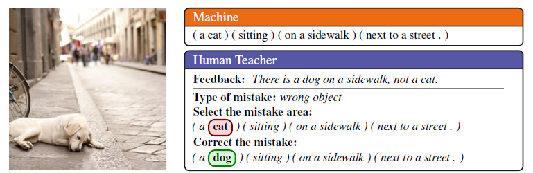
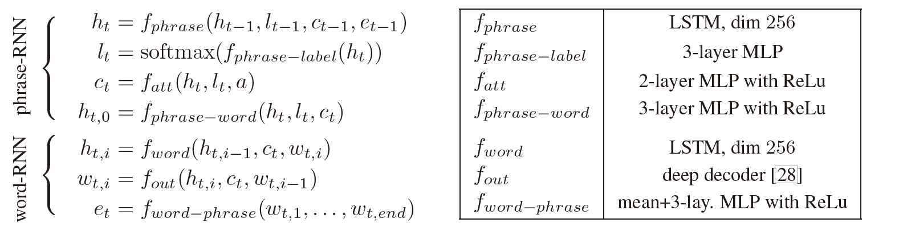
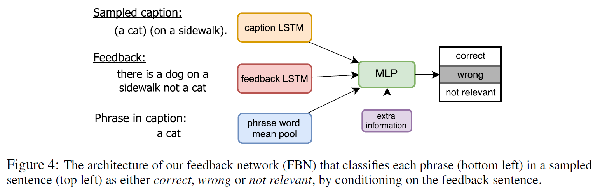
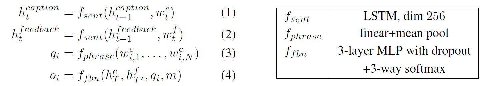
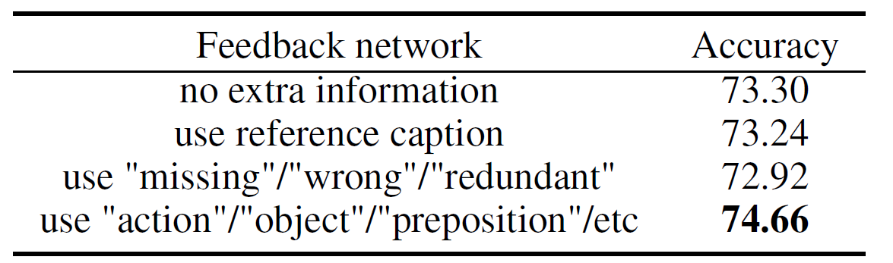
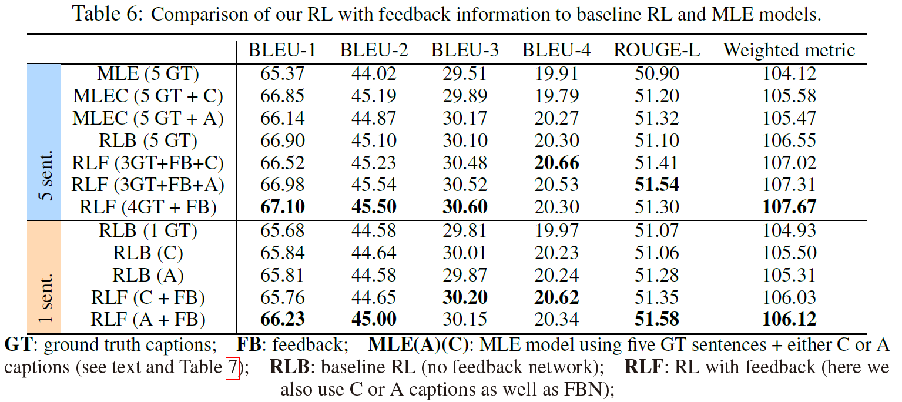

背景
让非专家的人类用户能够通过自然语言来指导agent是一件很有必要的事情，因为描述性的自然语言相比于数值化的评分来说包含了更针对性的信息。而agent和环境的交互自然就需要采用强化学习的方法，来指导RL agent.
目标
让非专家的人类用自然语言对RL agent在image caption任务中生成的caption进行反馈，从而产生描述能力的提升。
模型
采用hierarchical phrase-based RNN来描述图像，设计web interface来收集非专家的人类对captions的反馈，并将收集到的信息应用到Policy Gradient RL中。

Phrase-based Image Captioning
采用一个hierarchical RNN. Hierarchical指RNN分为两层，一层基于Phrase，来提供topic，另一层是在每个phrase中对word套用word RNN，来生成具体的单词。

先看Phrase-RNN, $h_t$是hidden state. $l_t$是预测的label，用来预测这个Phrase应该属于什么词性，名词，动词，介词和连词四种。$c_t$是通过attention层得到的context vector, 表示在生成第$t$个phrase时关注的图像区域，$c_t$输入里的$a$是利用CNN从图像中抽取出的特征向量的集合，attention还要输入一个label，作者说这是因为能显著提升attention的质量。
确定下来每一个phrase的信息，接下来就是生成第一个word，它的hidden state就是$h_{t, 0}$. 这个hidden state是通过上面计算的整个phrase的hidden state，label，还有context vector得到的。
然后来看word-RNN，每个单词和对应的hidden state是序列生成的，和前一个单词以及hidden state有关。一个Phrase每个word生成完后，会有一个$e_t$通过简单的mean-pooling来对phrase编码，来为下一个phrase提供word-level context.
Crowd-sourcing Human Feedback
人类反馈的大体过程和前面的图相似。将图片和生成的caption (using greedy decoding)交给annotator. Annotation分为两轮：
- 第一轮：评价caption的质量（perfect, acceptable, grammar mistakes only, minor or major errors）
- 第二轮：以上图的 (a cat) (sitting) (on a sidewalk) (next to a street) 为例。
- 选择修正类型（如something should be replaced）
- 用自然语言给出反馈（如There is a dog on a sidewalk, not a cat）
- 选择错误类型（如wrong object）
- 选择包含错误的word/phrase （如a cat）
- 修正选中的word/phrase（如 a cat -> a dog）
- 评价修正后的caption的质量
Feedback Network
如何利用feedback中丰富的信息？设计一个feedback network (FBN)来基于反馈的句子产生额外的reward，然后使用在RL中。

具体的功能如上图，根据feedback将sampled caption中每个phrase进行三分类为correct, wrong, not relevant, 即判断每个phrase的correctness/relevance.（这部分不需要图像）

FBN对caption和feedback都采用LSTM来编码，对phrase中的words做mean pooling来表示phrase，将信息传入一个三层的MLP. MLP还接受extra information，即错误类别（如wrong object）, 最后输入一个三分类的结果。训练FBN则是利用收集来的ground-truth.
Policy Gradient Optimization using Natural Language Feedback
这篇文章里采用的Self-critical Sequence Training for Image Captioning里的Self-critical sequence training (SCST)方法，利用当前模型在测试阶段生成的词的reward作为baseline 引入。因此
$$
\nabla_\theta L(\theta) \approx -(r(w^s)-r(\hat w)) \nabla_\theta \log p_\theta (w^s)
$$
其中$r(\hat{w})$是baseline $b$, 由greedy decoding获得。
关于Reward，作者在两个层面（sentence和phrase）给出了定义，均融合了人类反馈信息。
Sentence level (performance metrics)
$$
r(w^s) = \beta \sum_i \lambda_i \cdot BLEU_i (w^s, ref)
$$
这里$\beta=1$表示perfect, 0.8为acceptable, 0.6为grammar/fluency issues only.Phrase level
$$
r(w_t^p) = r(w^s) + \lambda_f f_{fbn}(w^s, feedback, w_t^p)
$$
$$
\text{where }w^s=w_1^p w_2^p \cdots w_P^p
$$
三分类转化为三种reward: correct为1, wrong为-1, not relevant为0.
最终的gradient为：
$$
\nabla_\theta L(\theta) = - \sum_{p=1}^P (r(w^p)-r(\hat w^p)) \nabla_\theta \log p_\theta (w^p)
$$
实验
数据集：COCO，使用预先训练的VGG network提取图像特征
实验结果：
Phrase-based captioning model
略低于Show-Attend-Tell. 但文章的可贵之处在于提出了一种人类反馈的更自然的使用方式
Feedback network

RL with Natural Language Feedback
和baseline RL, MLE对比
